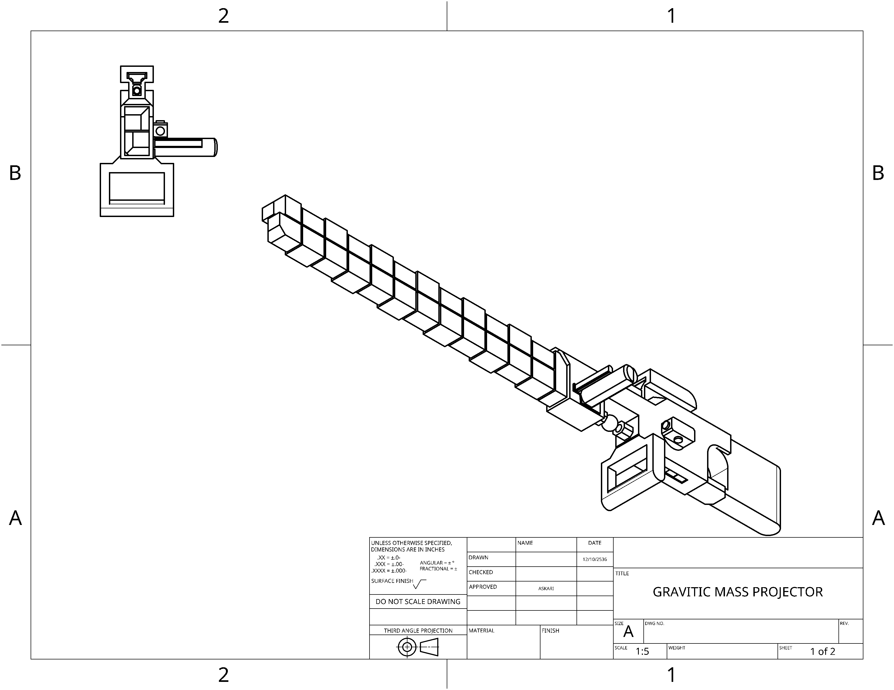
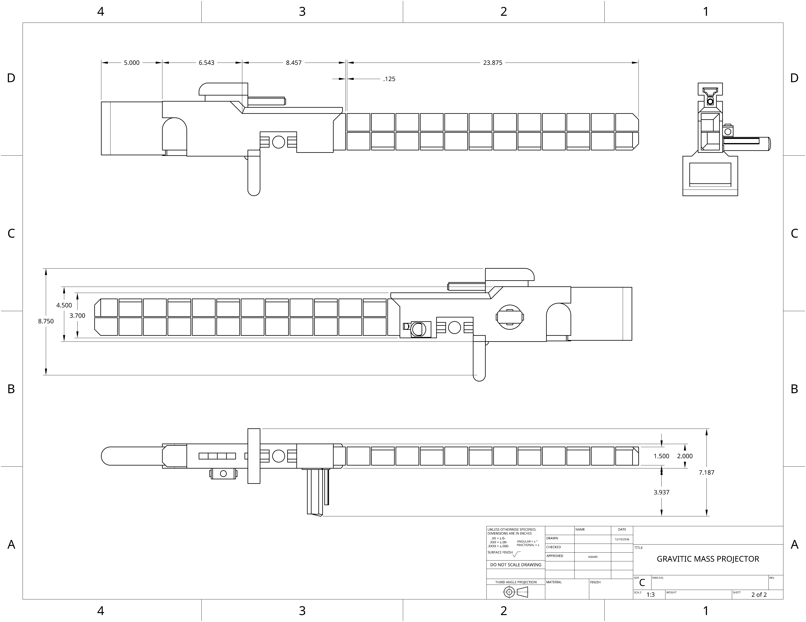

The M2 Gravitic mass projector is a weapon that fires two orbiting projectiles that gain speed as they travel towards a target of which upon making contact will warp gravity and space time in a field around impact.
 | | | | | | |
|---|---|---|
| Damage: | __ | (Headshot capable) |
| Velocity: | 343mps | |
| Armor penetration: | ___ | |
| Rate of fire: | 55 | |
| Magazine size: | 7 |